CODING AGENTS AS PIXEL WORLD MODELS
traex/DeepSeek-V4.1-Flash · dynamic_spatial_relationship_0023
点击播放 · 原生 RGB 像素
逐轮保存的候选
回放视频、检查图与代码变化。
每份候选均可单独播放。实际图片检查记录在下方工具轨迹中。
候选 01播放与检查图
点击播放 · 原生 RGB 像素

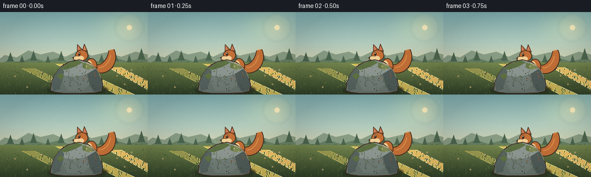
展开代码变化
--- 上一保存版本
+++ 本次保存版本
@@ -0,0 +1,595 @@
+from pathlib import Path
+import math
+import random
+
+import numpy as np
+from PIL import Image, ImageDraw, ImageFilter
+
+from artifact_io import save
+
+
+W, H = 256, 144
+FRAMES = 20
+FPS = 4
+SS = 6
+
+ROOT = Path(__file__).resolve().parent
+
+OUTLINE = (63, 43, 31, 255)
+FUR_DARK = (151, 82, 42, 255)
+FUR = (194, 111, 55, 255)
+FUR_LIGHT = (226, 150, 82, 255)
+CREAM = (238, 207, 151, 255)
+
+
+def px(value):
+ return int(round(value * SS))
+
+
+def rgba(color):
+ if len(color) == 4:
+ return color
+ return (*color, 255)
+
+
+def mix(a, b, t):
+ return tuple(int(round(a[i] + (b[i] - a[i]) * t)) for i in range(len(a)))
+
+
+def cubic(points, steps=36):
+ p0, p1, p2, p3 = points
+ result = []
+ for i in range(steps + 1):
+ t = i / steps
+ u = 1.0 - t
+ x = u**3 * p0[0] + 3 * u**2 * t * p1[0] + 3 * u * t**2 * p2[0] + t**3 * p3[0]
+ y = u**3 * p0[1] + 3 * u**2 * t * p1[1] + 3 * u * t**2 * p2[1] + t**3 * p3[1]
+ result.append((x, y))
+ return result
+
+
+def poly(draw, points, fill, outline=None, width=0):
+ pts = [(px(x), px(y)) for x, y in points]
+ draw.polygon(pts, fill=fill)
+ if outline is not None:
+ draw.line(pts + [pts[0]], fill=outline, width=max(1, px(width)), joint="curve")
+
+
+def line(draw, points, fill, width=1.0):
+ pts = [(px(x), px(y)) for x, y in points]
+ draw.line(pts, fill=fill, width=max(1, px(width)), joint="curve")
+
+
+def ellipse(draw, box, fill, outline=None, width=0):
+ x0, y0, x1, y1 = box
+ draw.ellipse(
+ (px(x0), px(y0), px(x1), px(y1)),
+ fill=fill,
+ outline=outline,
+ width=max(1, px(width)) if outline is not None else 0,
+ )
+
+
+def make_sky():
+ width, height = W * SS, H * SS
+ y = np.linspace(0.0, 1.0, height, dtype=np.float32)[:, None]
+ stops = [
+ (0.00, (126, 174, 178)),
+ (0.38, (177, 203, 190)),
+ (0.68, (224, 213, 174)),
+ (0.82, (244, 218, 163)),
+ (1.00, (229, 207, 153)),
+ ]
+ sky = np.zeros((height, width, 3), dtype=np.float32)
+ for i in range(len(stops) - 1):
+ a, ca = stops[i]
+ b, cb = stops[i + 1]
+ t = np.clip((y - a) / (b - a), 0.0, 1.0)
+ mask = (y >= a) & (y <= b)
+ for channel in range(3):
+ sky[:, :, channel] = np.where(
+ mask,
+ ca[channel] + (cb[channel] - ca[channel]) * t,
+ sky[:, :, channel],
+ )
+
+ yy, xx = np.mgrid[0:height, 0:width]
+ nx = xx / width
+ ny = yy / height
+ glow = np.exp(-(((nx - 0.83) / 0.22) ** 2 + ((ny - 0.16) / 0.28) ** 2) * 1.8)
+ for channel, amount in enumerate((27, 22, 7)):
+ sky[:, :, channel] += glow * amount
+
+ # Fine atmospheric texture keeps the broad sky from looking like a flat fill.
+ rng = np.random.default_rng(9)
+ noise = rng.normal(0.0, 1.7, (height // 3, width // 3)).astype(np.float32)
+ noise = np.repeat(np.repeat(noise, 3, axis=0), 3, axis=1)[:height, :width]
+ sky += noise[:, :, None]
+ return Image.fromarray(np.clip(sky, 0, 255).astype(np.uint8), "RGB").convert("RGBA")
+
+
+def draw_pine(draw, x, base_y, height, color, width):
+ levels = 4
+ for i in range(levels):
+ t = i / levels
+ top = base_y - height + height * t * 0.56
+ half = width * (0.30 + 0.70 * t)
+ bottom = top + height * 0.34
+ poly(
+ draw,
+ [(x, top), (x - half, bottom), (x + half, bottom)],
+ color,
+ )
+ line(draw, [(x, base_y - 3), (x, base_y)], color, 1.5)
+
+
+def draw_background():
+ image = make_sky()
+ draw = ImageDraw.Draw(image)
+ rng = random.Random(23)
+
+ # Sun glow and a small soft disk.
+ glow = Image.new("RGBA", image.size, (0, 0, 0, 0))
+ gd = ImageDraw.Draw(glow)
+ for radius, alpha in ((24, 22), (18, 30), (12, 44), (7, 72)):
+ ellipse(
+ gd,
+ (224 - radius, 27 - radius, 224 + radius, 27 + radius),
+ (255, 235, 181, alpha),
+ )
+ glow = glow.filter(ImageFilter.GaussianBlur(px(2.4)))
+ image.alpha_composite(glow)
+ draw = ImageDraw.Draw(image)
+ ellipse(draw, (219.5, 22.5, 228.5, 31.5), (255, 242, 196, 205))
+
+ # Far mountain/hill bands.
+ poly(
+ draw,
+ [(-8, 87), (8, 75), (29, 79), (49, 67), (70, 74), (92, 69),
+ (113, 78), (137, 67), (159, 76), (185, 70), (210, 78), (235, 69),
+ (264, 76), (264, 106), (-8, 106)],
+ (137, 157, 133, 255),
+ )
+ poly(
+ draw,
+ [(-8, 94), (14, 84), (34, 88), (56, 79), (78, 86), (101, 80),
+ (126, 89), (149, 80), (172, 87), (197, 79), (220, 86), (244, 81),
+ (264, 86), (264, 109), (-8, 109)],
+ (103, 128, 100, 255),
+ )
+
+ # Distant tree line, deliberately low contrast.
+ tree_color = (75, 101, 79, 255)
+ for x, y, h, w in [
+ (18, 91, 21, 8), (38, 93, 17, 7), (58, 90, 23, 8), (83, 92, 16, 6),
+ (106, 90, 22, 8), (129, 93, 17, 6), (151, 90, 24, 8), (176, 92, 18, 7),
+ (199, 91, 23, 8), (224, 92, 18, 6), (245, 89, 26, 9),
+ ]:
+ draw_pine(draw, x, y, h, tree_color, w)
+ for x, y, r in [(30, 92, 7), (69, 93, 8), (96, 92, 6), (141, 93, 8), (188, 92, 7), (236, 93, 8)]:
+ ellipse(draw, (x - r, y - r * 0.75, x + r, y + r * 0.45), (80, 106, 78, 255))
+
+ # Meadow with warm bands and a soft track of sunlight.
+ top, bottom = 88, H
+ field = Image.new("RGBA", (W * SS, (bottom - top) * SS), (0, 0, 0, 0))
+ fd = ImageDraw.Draw(field)
+ for yy in range((bottom - top) * SS):
+ t = yy / ((bottom - top) * SS - 1)
+ c = mix((117, 135, 78), (46, 64, 40), t)
+ fd.line([(0, yy), (field.width, yy)], fill=(*c, 255))
+ image.alpha_composite(field, (0, px(top)))
+ draw = ImageDraw.Draw(image)
+
+ # Sunlit bands across the meadow.
+ for x0, y0, x1, y1, color in [
+ (35, 98, 126, 144, (151, 153, 78, 28)),
+ (94, 90, 201, 144, (205, 181, 91, 22)),
+ (185, 96, 269, 144, (235, 199, 112, 17)),
+ ]:
+ poly(draw, [(x0, y0), (x1, y1), (x1 + 34, y1), (x0 + 25, y0)], color)
+
+ # Grass texture, denser toward the foreground.
+ for _ in range(430):
+ x = rng.uniform(-2, 258)
+ y = rng.uniform(96, 145)
+ depth = (y - 96) / 49
+ length = rng.uniform(1.8, 4.6) * (0.55 + depth * 0.7)
+ lean = rng.uniform(-1.4, 1.4)
+ shade = rng.choice([
+ (50, 72, 43, 185), (62, 85, 45, 175), (104, 121, 62, 170),
+ (133, 143, 70, 145), (79, 101, 53, 175),
+ ])
+ line(draw, [(x, y), (x + lean, y - length)], shade, 0.55)
+
+ # A few tiny wildflowers add scale without competing with the subject.
+ for x, y, c in [
+ (26, 112, (224, 204, 135, 210)), (72, 105, (230, 218, 166, 200)),
+ (203, 111, (224, 204, 135, 210)), (228, 101, (233, 225, 184, 195)),
+ (47, 131, (236, 221, 163, 215)), (216, 126, (231, 212, 153, 210)),
+ ]:
+ for dx, dy in ((0, -0.8), (0.8, 0), (0, 0.8), (-0.8, 0)):
+ ellipse(draw, (x + dx - 0.7, y + dy - 0.7, x + dx + 0.7, y + dy + 0.7), c)
+ ellipse(draw, (x - 0.6, y - 0.6, x + 0.6, y + 0.6), (113, 80, 38, 220))
+
+ return image
+
+
+def rock_polygon():
+ return [
+ (87, 137), (89, 124), (95, 109), (105, 96), (119, 87),
+ (137, 83), (153, 87), (166, 97), (174, 111), (178, 128),
+ (176, 138), (164, 141), (139, 142), (111, 142), (95, 140),
+ ]
+
+
+def draw_rock(base):
+ shadow = Image.new("RGBA", base.size, (0, 0, 0, 0))
+ sd = ImageDraw.Draw(shadow)
+ ellipse(sd, (80, 130, 185, 144), (37, 43, 35, 130))
+ ellipse(sd, (95, 126, 171, 141), (31, 37, 32, 110))
+ shadow = shadow.filter(ImageFilter.GaussianBlur(px(2.4)))
+ base.alpha_composite(shadow)
+
+ rock = Image.new("RGBA", base.size, (0, 0, 0, 0))
+ rd = ImageDraw.Draw(rock)
+ body = rock_polygon()
+ poly(rd, body, (105, 117, 110, 255), OUTLINE, 1.25)
+
+ # Broad faceted lighting.
+ poly(
+ rd,
+ [(101, 104), (119, 89), (138, 84), (155, 90), (165, 99), (151, 108),
+ (132, 113), (112, 111)],
+ (141, 151, 146, 255),
+ )
+ poly(
+ rd,
+ [(151, 108), (166, 99), (174, 112), (178, 128), (174, 137), (163, 139),
+ (155, 126)],
+ (78, 91, 88, 255),
+ )
+ poly(
+ rd,
+ [(89, 124), (95, 109), (105, 96), (111, 103), (108, 120), (102, 135),
+ (92, 138)],
+ (87, 100, 96, 255),
+ )
+ poly(
+ rd,
+ [(112, 111), (132, 113), (151, 108), (155, 126), (142, 137), (117, 137),
+ (108, 120)],
+ (114, 126, 120, 255),
+ )
+
+ # Moss cap and small lichen islands.
+ for points, color in [
+ ([(104, 99), (118, 89), (135, 84), (143, 88), (131, 95), (113, 101)], (91, 111, 66, 225)),
+ ([(143, 88), (155, 91), (164, 98), (153, 101), (143, 97)], (100, 121, 71, 210)),
+ ([(98, 111), (106, 106), (111, 112), (105, 118)], (98, 117, 68, 205)),
+ ]:
+ poly(rd, points, color)
+
+ # Rock grain and cracks.
+ rng = random.Random(71)
+ for _ in range(85):
+ x = rng.uniform(96, 174)
+ y = rng.uniform(91, 137)
+ if (x - 134) ** 2 / 44**2 + (y - 115) ** 2 / 28**2 < 1:
+ radius = rng.uniform(0.25, 1.1)
+ c = rng.choice([(69, 81, 77, 80), (157, 163, 154, 65), (91, 103, 97, 70)])
+ ellipse(rd, (x - radius, y - radius, x + radius, y + radius), c)
+
+ line(rd, [(116, 95), (120, 103), (118, 112), (123, 119), (120, 128)], (74, 86, 82, 170), 0.75)
+ line(rd, [(123, 119), (132, 121), (137, 129)], (74, 86, 82, 145), 0.55)
+ line(rd, [(150, 100), (147, 108), (153, 116), (151, 124)], (61, 75, 72, 135), 0.65)
+
+ # Warm rim light from the upper right.
+ rim = [(149, 88), (161, 93), (170, 103), (175, 115)]
+ line(rd, rim, (194, 190, 158, 125), 1.1)
+ base.alpha_composite(rock)
+
+
+def tapered_tail(draw, curve, base_width, fill, highlight):
+ samples = []
+ count = len(curve)
+ for i, (x, y) in enumerate(curve):
+ t = i / (count - 1)
+ if i == 0:
+ dx = curve[1][0] - x
+ dy = curve[1][1] - y
+ elif i == count - 1:
+ dx = x - curve[i - 1][0]
+ dy = y - curve[i - 1][1]
+ else:
+ dx = curve[i + 1][0] - curve[i - 1][0]
+ dy = curve[i + 1][1] - curve[i - 1][1]
+ length = math.hypot(dx, dy) or 1.0
+ nx, ny = -dy / length, dx / length
+ width = base_width * (0.58 + 0.55 * math.sin(math.pi * t) ** 0.72)
+ width *= 0.82 + 0.18 * (1.0 - t)
+ samples.append((x, y, nx, ny, width))
+
+ def polygon(extra):
+ left = [(x + nx * (w + extra), y + ny * (w + extra)) for x, y, nx, ny, w in samples]
+ right = [(x - nx * (w + extra), y - ny * (w + extra)) for x, y, nx, ny, w in reversed(samples)]
+ return left + right
+
+ poly(draw, polygon(1.35), OUTLINE)
+ poly(draw, polygon(0.0), fill)
+
+ highlight_points = [
+ (x - nx * w * 0.30, y - ny * w * 0.30)
+ for x, y, nx, ny, w in samples[5:-7]
+ ]
+ if len(highlight_points) > 1:
+ line(draw, highlight_points, highlight, 1.25)
+
+
+def draw_squirrel_layer(pose):
+ layer = Image.new("RGBA", (px(128), px(96)), (0, 0, 0, 0))
+ d = ImageDraw.Draw(layer)
+
+ body_w = pose.get("body_w", 21.0)
+ body_h = pose.get("body_h", 30.0)
+ bx, by = 58.0, 55.0
+ hx, hy = pose.get("head", (41.0, 37.0))
+ tail = pose.get(
+ "tail",
+ [(65, 58), (83, 64), (95, 43), (91, 27), (77, 18)],
+ )
+ tail_curve = cubic(tail[:4], 38)
+
+ # Tail sits behind the torso.
+ tapered_tail(d, tail_curve, pose.get("tail_width", 7.8), FUR, FUR_LIGHT)
+
+ # Far legs.
+ far_leg = pose.get("far_leg", [(53, 67), (50, 74), (45, 76)])
+ line(d, far_leg, OUTLINE, 3.5)
+ line(d, far_leg, FUR_DARK, 2.1)
+ ellipse(d, (42, 73, 49, 78), FUR_DARK, OUTLINE, 0.7)
+
+ # Torso.
+ ellipse(
+ d,
+ (bx - body_w / 2, by - body_h / 2, bx + body_w / 2, by + body_h / 2),
+ FUR,
+ OUTLINE,
+ 1.25,
+ )
+ ellipse(
+ d,
+ (bx - body_w * 0.48, by - body_h * 0.35, bx + body_w * 0.10, by + body_h * 0.42),
+ CREAM,
+ )
+
+ # Near haunch and planted foot.
+ ellipse(d, (55, 65, 69, 77), FUR_DARK, OUTLINE, 1.0)
+ ellipse(d, (48, 72, 64, 79), FUR, OUTLINE, 0.85)
+ toe_x = pose.get("toe_x", 51)
+ for i in range(3):
+ line(d, [(toe_x + i * 2.0, 76), (toe_x - 1.0 + i * 2.0, 78.0)], OUTLINE, 0.55)
+
+ # Head, ears, face.
+ ellipse(d, (hx - 11, hy - 10, hx + 11, hy + 10), FUR, OUTLINE, 1.2)
+ ear_lean = pose.get("ear_lean", 0.0)
+ poly(
+ d,
+ [(hx - 8, hy - 7), (hx - 8 + ear_lean, hy - 19), (hx + 1, hy - 10)],
+ FUR_DARK,
+ OUTLINE,
+ 0.9,
+ )
+ poly(
+ d,
+ [(hx + 1, hy - 9), (hx + 4 + ear_lean, hy - 20), (hx + 10, hy - 7)],
+ FUR_DARK,
+ OUTLINE,
+ 0.9,
+ )
+ poly(d, [(hx - 7.5, hy - 9), (hx - 7 + ear_lean * 0.7, hy - 16.5), (hx - 2, hy - 10)], (203, 125, 90, 255))
+ poly(d, [(hx + 2, hy - 10), (hx + 4.5 + ear_lean * 0.7, hy - 17.2), (hx + 8, hy - 9)], (203, 125, 90, 255))
+
+ # Muzzle and cream cheek.
+ ellipse(d, (hx - 15, hy + 1, hx - 1, hy + 9), CREAM, OUTLINE, 0.75)
+ ellipse(d, (hx - 6, hy + 1, hx + 4, hy + 9), CREAM)
+ ellipse(d, (hx - 16.0, hy + 3.2, hx - 13.1, hy + 6.0), (63, 43, 31, 255))
+
+ # Eye and catchlight.
+ eye_open = pose.get("eye_open", 1.0)
+ eye_y = hy - 2.0
+ if eye_open > 0.25:
+ ellipse(d, (hx - 6.2, eye_y - 2.7 * eye_open, hx - 2.4, eye_y + 2.7 * eye_open), (43, 34, 29, 255))
+ ellipse(d, (hx - 5.4, eye_y - 2.0 * eye_open, hx - 3.9, eye_y - 0.3 * eye_open), (255, 247, 218, 230))
+ else:
+ line(d, [(hx - 6.2, eye_y), (hx - 2.5, eye_y)], OUTLINE, 0.8)
+
+ # Brow and whiskers.
+ line(d, [(hx - 7.5, hy - 5.7), (hx - 3.2, hy - 6.5), (hx - 0.2, hy - 5.0)], (102, 56, 34, 190), 0.55)
+ for dy in (-0.8, 1.2, 3.0):
+ line(d, [(hx - 14.5, hy + 5), (hx - 23, hy + 4 + dy)], (80, 57, 42, 110), 0.30)
+
+ # Front paw, raised differently in airborne poses.
+ paw = pose.get("paw", [(46, 55), (38, 59), (34, 58)])
+ line(d, paw, OUTLINE, 3.1)
+ line(d, paw, FUR_DARK, 1.8)
+ ellipse(d, (paw[-1][0] - 2.0, paw[-1][1] - 1.8, paw[-1][0] + 2.5, paw[-1][1] + 2.1), FUR, OUTLINE, 0.55)
+
+ # Tail tip highlight makes the silhouette read at video scale.
+ tip = tail_curve[-1]
+ ellipse(d, (tip[0] - 1.2, tip[1] - 1.0, tip[0] + 1.2, tip[1] + 1.0), FUR_LIGHT)
+
+ angle = pose.get("angle", 0.0)
+ if abs(angle) > 0.01:
+ layer = layer.rotate(
+ angle,
+ resample=Image.Resampling.BICUBIC,
+ center=(px(58), px(55)),
+ )
+ return layer
+
+
+IDLE = {
+ "body_w": 21.0, "body_h": 30.0, "head": (41, 37),
+ "tail": [(65, 58), (83, 64), (95, 43), (91, 27), (77, 18)],
+ "paw": [(46, 55), (38, 59), (34, 58)],
+ "far_leg": [(53, 67), (50, 74), (45, 76)],
+}
+
+PEek = {
+ "body_w": 21.0, "body_h": 29.0, "head": (41, 36),
+ "tail": [(65, 57), (84, 64), (97, 42), (92, 25), (78, 17)],
+ "paw": [(46, 55), (38, 60), (34, 59)],
+ "far_leg": [(53, 67), (50, 74), (45, 76)],
+ "angle": -1.5,
+}
+
+CROUCH = {
+ "body_w": 25.0, "body_h": 23.0, "head": (41, 43),
+ "tail": [(65, 59), (85, 67), (97, 49), (94, 33), (82, 27)],
+ "paw": [(45, 58), (36, 62), (31, 61)],
+ "far_leg": [(51, 67), (45, 73), (39, 75)],
+ "angle": 3.5,
+}
+
+TAKEOFF = {
+ "body_w": 18.0, "body_h": 34.0, "head": (39, 31),
+ "tail": [(64, 58), (86, 63), (101, 47), (104, 32), (96, 20)],
+ "paw": [(45, 53), (35, 56), (30, 53)],
+ "far_leg": [(52, 67), (57, 74), (64, 76)],
+ "angle": -8.0,
+}
+
+RISE = {
+ "body_w": 18.0, "body_h": 35.0, "head": (38, 29),
+ "tail": [(64, 58), (88, 61), (105, 45), (110, 29), (104, 16)],
+ "paw": [(44, 51), (32, 52), (27, 49)],
+ "far_leg": [(52, 68), (59, 74), (67, 76)],
+ "angle": -11.0,
+}
+
+APEX = {
+ "body_w": 17.0, "body_h": 34.0, "head": (38, 30),
+ "tail": [(65, 58), (88, 57), (105, 39), (109, 22), (101, 10)],
+ "paw": [(44, 50), (31, 49), (25, 47)],
+ "far_leg": [(52, 68), (60, 74), (69, 75)],
+ "angle": -8.0,
+}
+
+FALL = {
+ "body_w": 19.0, "body_h": 33.0, "head": (39, 32),
+ "tail": [(65, 58), (86, 62), (101, 47), (103, 30), (94, 20)],
+ "paw": [(45, 53), (34, 55), (29, 55)],
+ "far_leg": [(52, 68), (58, 75), (66, 77)],
+ "angle": -4.0,
+}
+
+LAND = {
+ "body_w": 25.0, "body_h": 24.0, "head": (41, 42),
+ "tail": [(65, 59), (86, 66), (98, 52), (97, 36), (87, 28)],
+ "paw": [(45, 58), (36, 64), (30, 64)],
+ "far_leg": [(51, 68), (45, 75), (39, 77)],
+ "angle": 4.0,
+}
+
+SETTLE = {
+ "body_w": 22.0, "body_h": 28.0, "head": (41, 39),
+ "tail": [(65, 58), (85, 65), (97, 47), (94, 30), (82, 23)],
+ "paw": [(46, 56), (38, 61), (33, 60)],
+ "far_leg": [(52, 67), (48, 74), (43, 76)],
+ "angle": 1.5,
+}
+
+
+def squirrel_state(frame):
+ # The body center path starts behind the boulder, rises over its top,
+ # clears the left edge, and settles beside it.
+ x_path = [158, 158, 159, 159, 158, 154, 147, 136, 122, 107, 92, 79, 68, 60, 56, 55, 55, 56, 57, 57]
+ y_path = [95, 95, 95, 96, 98, 88, 78, 68, 60, 56, 55, 58, 65, 75, 87, 96, 100, 100, 99, 99]
+ poses = [
+ PEek, PEek, PEek, PEek, CROUCH,
+ TAKEOFF, RISE, RISE, APEX, APEX, APEX, FALL, FALL, FALL,
+ LAND, LAND, SETTLE, SETTLE, IDLE, IDLE,
+ ]
+ return x_path[frame], y_path[frame], poses[frame]
+
+
+def draw_ground_shadow(base, x, y, airborne):
+ shadow = Image.new("RGBA", base.size, (0, 0, 0, 0))
+ sd = ImageDraw.Draw(shadow)
+ height = 6.5 - min(airborne, 1.0) * 2.0
+ width = 18.0 - min(airborne, 1.0) * 4.0
+ alpha = int(92 - min(airborne, 1.0) * 34)
+ ellipse(sd, (x - width / 2, y - height / 2, x + width / 2, y + height / 2), (43, 44, 30, alpha))
+ shadow = shadow.filter(ImageFilter.GaussianBlur(px(2.2)))
+ base.alpha_composite(shadow)
+
+
+def draw_dust(base, frame):
+ if frame < 5 or frame > 18:
+ return
+ dust = Image.new("RGBA", base.size, (0, 0, 0, 0))
+ d = ImageDraw.Draw(dust)
+ if frame <= 8:
+ center_x, center_y = 164, 126
+ strength = max(0.0, 1.0 - (frame - 5) / 4.0)
+ else:
+ center_x, center_y = 51, 124
+ strength = max(0.0, 1.0 - abs(frame - 15) / 4.5)
+ if strength > 0:
+ rng = random.Random(300 + frame)
+ for _ in range(9):
+ angle = rng.uniform(-math.pi, 0)
+ distance = rng.uniform(2, 15) * strength
+ x = center_x + math.cos(angle) * distance
+ y = center_y + math.sin(angle) * distance * 0.45
+ r = rng.uniform(1.0, 2.6)
+ alpha = int(72 * strength * rng.uniform(0.45, 1.0))
+ ellipse(d, (x - r, y - r * 0.7, x + r, y + r * 0.7), (223, 201, 143, alpha))
+ dust = dust.filter(ImageFilter.GaussianBlur(px(0.75)))
+ base.alpha_composite(dust)
+
+
+def add_lighting_and_grain(image, frame):
+ arr = np.asarray(image.convert("RGB"), dtype=np.float32)
+ h, w = arr.shape[:2]
+ yy, xx = np.mgrid[0:h, 0:w]
+ nx = (xx / (w - 1) - 0.5) * 2.0
+ ny = (yy / (h - 1) - 0.5) * 2.0
+ vignette = np.clip(1.0 - 0.10 * (nx * nx + ny * ny), 0.88, 1.0)
+ arr *= vignette[:, :, None]
+
+ # A faint warm cast in the upper right, cool shade in the lower left.
+ light = np.clip((nx * 0.55 - ny * 0.35 + 0.35), 0.0, 1.0)[:, :, None]
+ arr += light * np.array([4.0, 2.6, 0.3], dtype=np.float32)
+
+ rng = np.random.default_rng(1000 + frame)
+ grain = rng.normal(0.0, 0.65, (h, w, 1)).astype(np.float32)
+ arr += grain
+ return Image.fromarray(np.clip(arr, 0, 255).astype(np.uint8), "RGB")
+
+
+def render_frame(background, frame):
+ image = background.copy()
+ x, y, pose = squirrel_state(frame)
+ ground_y = 120
+ airborne = max(0.0, min(1.0, (ground_y - (y + 23)) / 48.0))
+ draw_ground_shadow(image, x + 1, ground_y, airborne)
+
+ squirrel = draw_squirrel_layer(pose)
+ image.alpha_composite(squirrel, (px(x - 58), px(y - 55)))
+
+ draw_rock(image)
+ draw_dust(image, frame)
+ final = image.resize((W, H), Image.Resampling.LANCZOS)
+ return np.asarray(add_lighting_and_grain(final, frame), dtype=np.uint8)
+
+
+def main():
+ background = draw_background()
+ frames = np.stack([render_frame(background, i) for i in range(FRAMES)], axis=0)
+ save(frames, ROOT)
+ print(f"Wrote {FRAMES} frames at {W}x{H}, {FPS} fps to {ROOT}")
+
+
+if __name__ == "__main__":
+ main()
候选 02播放与检查图
点击播放 · 原生 RGB 像素

展开代码变化
--- 上一保存版本
+++ 本次保存版本
@@ -289,7 +289,7 @@
base.alpha_composite(rock)
-def tapered_tail(draw, curve, base_width, fill, highlight):
+def tapered_tail(draw, curve, base_width, fill, highlight, tip_fill=None):
samples = []
count = len(curve)
for i, (x, y) in enumerate(curve):
@@ -317,6 +317,15 @@
poly(draw, polygon(1.35), OUTLINE)
poly(draw, polygon(0.0), fill)
+ if tip_fill is not None:
+ tip_samples = samples[-11:]
+ tip_polygon = [
+ (x + nx * w, y + ny * w) for x, y, nx, ny, w in tip_samples
+ ] + [
+ (x - nx * w, y - ny * w) for x, y, nx, ny, w in reversed(tip_samples)
+ ]
+ poly(draw, tip_polygon, tip_fill)
+
highlight_points = [
(x - nx * w * 0.30, y - ny * w * 0.30)
for x, y, nx, ny, w in samples[5:-7]
@@ -340,7 +349,10 @@
tail_curve = cubic(tail[:4], 38)
# Tail sits behind the torso.
- tapered_tail(d, tail_curve, pose.get("tail_width", 7.8), FUR, FUR_LIGHT)
+ tapered_tail(
+ d, tail_curve, pose.get("tail_width", 7.8), FUR, FUR_LIGHT,
+ pose.get("tail_tip", (219, 155, 104, 255)),
+ )
# Far legs.
far_leg = pose.get("far_leg", [(53, 67), (50, 74), (45, 76)])
@@ -576,7 +588,10 @@
draw_ground_shadow(image, x + 1, ground_y, airborne)
squirrel = draw_squirrel_layer(pose)
- image.alpha_composite(squirrel, (px(x - 58), px(y - 55)))
+ # Scale the character above the background's visual scale so the pose
+ # remains legible at the 256x144 delivery resolution.
+ squirrel = squirrel.resize((px(147), px(110)), Image.Resampling.LANCZOS)
+ image.alpha_composite(squirrel, (px(x - 66.5), px(y - 63)))
draw_rock(image)
draw_dust(image, frame)
可观测工具轨迹
实际执行的命令与返回图片。
命令 1exit 0
/bin/bash -c "pwd && rg --files -g 'prompt.txt' -g 'GENERATION_RULES.md' -g 'task_spec.json' -g '"'!node_modules'"'"
命令 2exit 0
/bin/bash -c "find . -maxdepth 2 -type f -printf '%p\\n' | sort | head -200"
命令 3exit 1
/bin/bash -c 'command -v ffmpeg; command -v blender; command -v python3; command -v node; command -v chromium; command -v google-chrome; command -v playwright'
命令 4exit 0
/bin/bash -c 'cat prompt.txt'
命令 5exit 0
/bin/bash -c 'cat GENERATION_RULES.md'
命令 6exit 0
/bin/bash -c 'cat task_spec.json'
命令 7exit 0
/bin/bash -c "sed -n '1,240p' artifact_io.py; printf '\\n---PLAYER---\\n'; sed -n '1,240p' player_template.html"
命令 8exit 1
/bin/bash -c 'python3 generate.py'
命令 9exit 0
/bin/bash -c 'python3 generate.py'
命令 10exit 0
/bin/bash -c 'python3 generate.py'
命令 11exit 0
/bin/bash -c "python3 - <<'PY'
from pathlib import Path
import json
import numpy as np
from PIL import Image
root = Path('.')
spec = json.loads((root / 'task_spec.json').read_text())
with np.load(root / 'pixels.npz') as data:
p = data['pixels']
print('pixels', p.shape, p.dtype)
print('expected', (spec['height'], spec['width'], spec['frames']))
frames = sorted((root / 'frames').glob('*.png'))
print('png frames', len(frames))
print('frame sizes', sorted({Image.open(f).size for f in frames}))
print('index exists', (root / 'index.html').is_file(), (root / 'index.html').stat().st_size)
print('inspection exists', (root / 'inspection.png').is_file())
PY"命令 12exit 0
/bin/bash -c 'python3 -m py_compile generate.py artifact_io.py'
命令 13exit 0
/bin/bash -c 'du -h pixels.npz index.html inspection.png transition_check.png; git status --short 2>/dev/null || true'
视觉工具实际返回图片 1
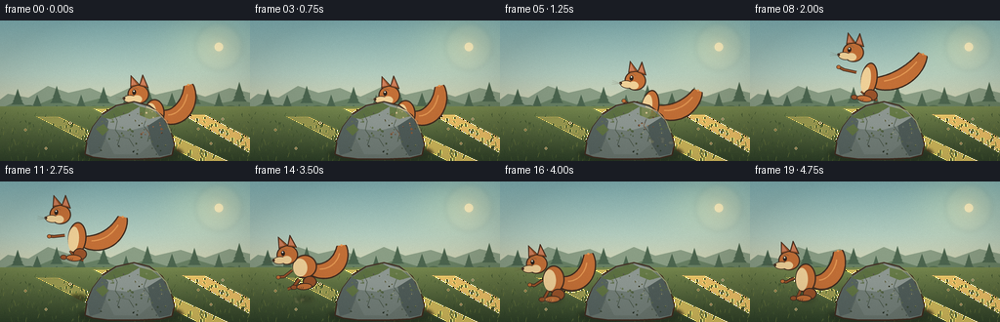
视觉工具实际返回图片 2
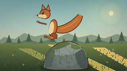
视觉工具实际返回图片 3
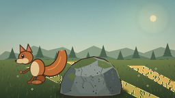
视觉工具实际返回图片 4
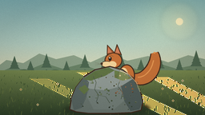
视觉工具实际返回图片 5
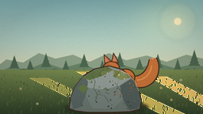
视觉工具实际返回图片 6
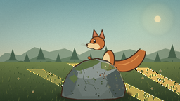
视觉工具实际返回图片 7
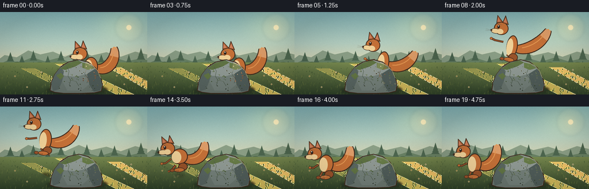
视觉工具实际返回图片 8
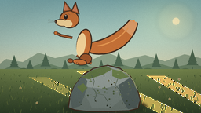
视觉工具实际返回图片 9

视觉工具实际返回图片 10
视觉工具实际返回图片 11
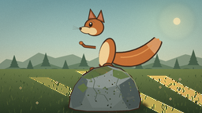
视觉工具实际返回图片 12
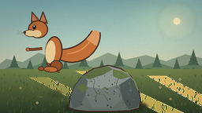
视觉工具实际返回图片 13
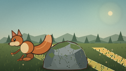
视觉工具实际返回图片 14
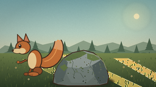
视觉工具实际返回图片 15
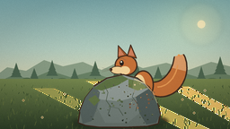
视觉工具实际返回图片 16
视觉工具实际返回图片 17
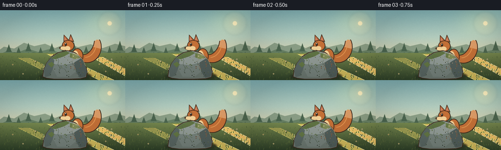
保存候选 2 份；完成命令 13 次；可验证图片返回 17 张。原始 API 响应与完整日志保留在本地。